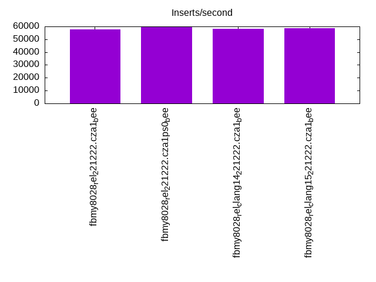
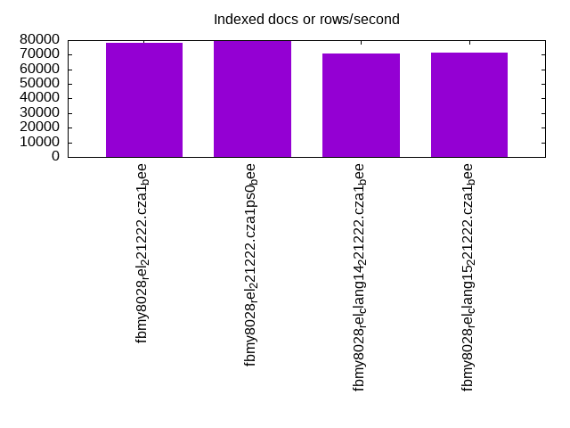
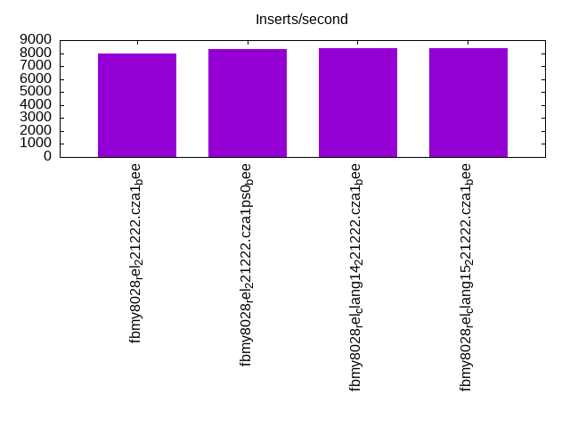
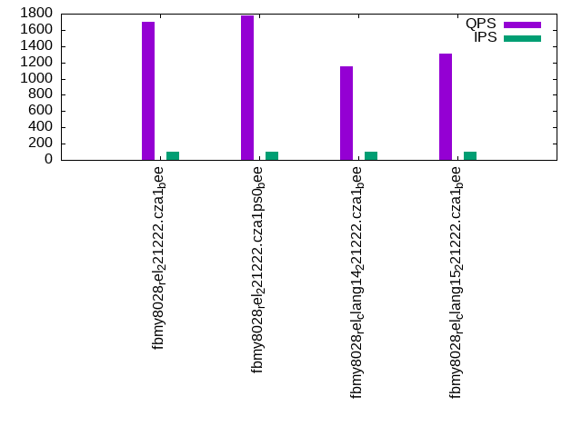
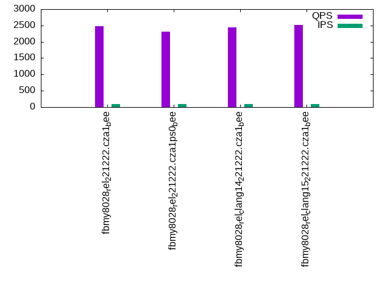
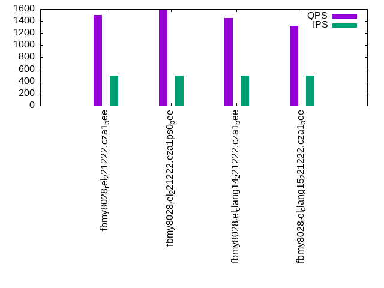
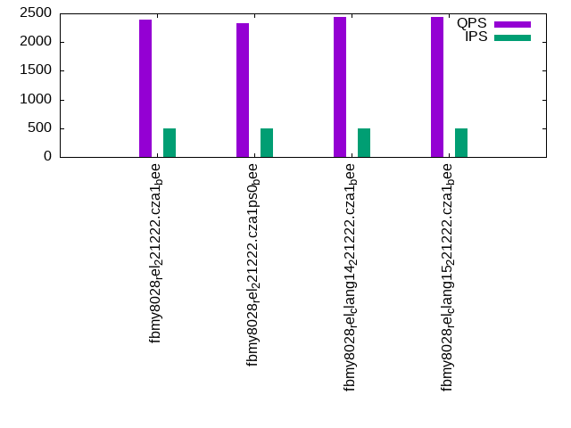
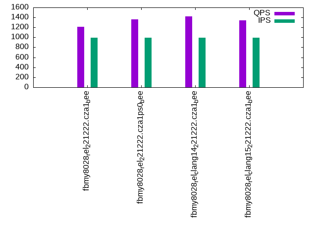
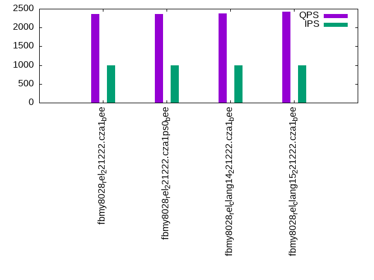

This is a report for the insert benchmark with 20M docs and 1 client(s). It is generated by scripts (bash, awk, sed) and Tufte might not be impressed. An overview of the insert benchmark is here and a short update is here. Below, by DBMS, I mean DBMS+version.config. An example is my8020.c10b40 where my means MySQL, 8020 is version 8.0.20 and c10b40 is the name for the configuration file.
The test server has 8 AMD cores, 16G RAM and an NVMe SSD. It is described here as the Beelink. The benchmark was run with 1 client and there were 1 or 3 connections per client (1 for queries or inserts without rate limits, 1+1 for rate limited inserts+deletes). It uses 1 table. It loads 20M rows per table without secondary indexes, creates 3 secondary indexes per table, then inserts 50m+50m rows per table with a delete per insert to avoid growing the table. It then does 6 read+write tests for 1800s each that do queries as fast as possible with 100,100,500,500,1000,1000 inserts/s and the same for deletes/s per client concurrent with the queries. The database is cached in memory. Clients and the DBMS share one server. The per-database configs are in the per-database subdirectories here.
The tested DBMS are:
The numbers are inserts/s for l.i0, l.i1 and l.i2, indexed docs (or rows) /s for l.x and queries/s for qr100, qp100 thru qr1000, qp1000" The values are the average rate over the entire test for inserts (IPS) and queries (QPS). The range of values for IPS and QPS is split into 3 parts: bottom 25%, middle 50%, top 25%. Values in the bottom 25% have a red background, values in the top 25% have a green background and values in the middle have no color. A gray background is used for values that can be ignored because the DBMS did not sustain the target insert rate. Red backgrounds are not used when the minimum value is within 80% of the max value.
| dbms | l.i0 | l.x | l.i1 | l.i2 | qr100 | qp100 | qr500 | qp500 | qr1000 | qp1000 |
|---|---|---|---|---|---|---|---|---|---|---|
| fbmy8028_rel_221222.cza1_bee | 57803 | 78432 | 22896 | 7968 | 1704 | 2480 | 1498 | 2393 | 1212 | 2358 |
| fbmy8028_rel_221222.cza1ps0_bee | 59701 | 79682 | 23460 | 8326 | 1776 | 2306 | 1594 | 2336 | 1366 | 2368 |
| fbmy8028_rel_clang14_221222.cza1_bee | 58140 | 70672 | 23585 | 8382 | 1146 | 2442 | 1447 | 2442 | 1423 | 2380 |
| fbmy8028_rel_clang15_221222.cza1_bee | 58824 | 71429 | 23711 | 8389 | 1309 | 2521 | 1325 | 2438 | 1337 | 2428 |
This table has relative throughput, throughput for the DBMS relative to the DBMS in the first line, using the absolute throughput from the previous table. Values less than 0.95 have a yellow background. Values greater than 1.05 have a blue background.
| dbms | l.i0 | l.x | l.i1 | l.i2 | qr100 | qp100 | qr500 | qp500 | qr1000 | qp1000 |
|---|---|---|---|---|---|---|---|---|---|---|
| fbmy8028_rel_221222.cza1_bee | 1.00 | 1.00 | 1.00 | 1.00 | 1.00 | 1.00 | 1.00 | 1.00 | 1.00 | 1.00 |
| fbmy8028_rel_221222.cza1ps0_bee | 1.03 | 1.02 | 1.02 | 1.04 | 1.04 | 0.93 | 1.06 | 0.98 | 1.13 | 1.00 |
| fbmy8028_rel_clang14_221222.cza1_bee | 1.01 | 0.90 | 1.03 | 1.05 | 0.67 | 0.98 | 0.97 | 1.02 | 1.17 | 1.01 |
| fbmy8028_rel_clang15_221222.cza1_bee | 1.02 | 0.91 | 1.04 | 1.05 | 0.77 | 1.02 | 0.88 | 1.02 | 1.10 | 1.03 |
This lists the average rate of inserts/s for the tests that do inserts concurrent with queries. For such tests the query rate is listed in the table above. The read+write tests are setup so that the insert rate should match the target rate every second. Cells that are not at least 95% of the target have a red background to indicate a failure to satisfy the target.
| dbms | qr100.L1 | qp100.L2 | qr500.L3 | qp500.L4 | qr1000.L5 | qp1000.L6 |
|---|---|---|---|---|---|---|
| fbmy8028_rel_221222.cza1_bee | 100 | 100 | 499 | 499 | 998 | 998 |
| fbmy8028_rel_221222.cza1ps0_bee | 100 | 100 | 499 | 499 | 998 | 998 |
| fbmy8028_rel_clang14_221222.cza1_bee | 100 | 100 | 499 | 499 | 998 | 998 |
| fbmy8028_rel_clang15_221222.cza1_bee | 100 | 100 | 499 | 499 | 998 | 998 |
| target | 100 | 100 | 500 | 500 | 1000 | 1000 |
l.i0: load without secondary indexes. Graphs for performance per 1-second interval are here.
Average throughput:
Insert response time histogram: each cell has the percentage of responses that take <= the time in the header and max is the max response time in seconds. For the max column values in the top 25% of the range have a red background and in the bottom 25% of the range have a green background. The red background is not used when the min value is within 80% of the max value.
| dbms | 256us | 1ms | 4ms | 16ms | 64ms | 256ms | 1s | 4s | 16s | gt | max |
|---|---|---|---|---|---|---|---|---|---|---|---|
| fbmy8028_rel_221222.cza1_bee | 99.723 | 0.200 | 0.074 | 0.003 | 0.077 | ||||||
| fbmy8028_rel_221222.cza1ps0_bee | 99.729 | 0.193 | 0.076 | 0.003 | 0.076 | ||||||
| fbmy8028_rel_clang14_221222.cza1_bee | 99.725 | 0.199 | 0.073 | 0.003 | 0.081 | ||||||
| fbmy8028_rel_clang15_221222.cza1_bee | 99.728 | 0.201 | 0.068 | 0.002 | 0.070 |
Performance metrics for the DBMS listed above. Some are normalized by throughput, others are not. Legend for results is here.
ips qps rps rmbps wps wmbps rpq rkbpq wpi wkbpi csps cpups cspq cpupq dbgb1 dbgb2 rss maxop p50 p99 tag 57803 0 0 0.0 34.6 11.1 0.000 0.000 0.001 0.196 5985 22.0 0.104 30 0.7 1.9 0.6 0.077 58042 52741 fbmy8028_rel_221222.cza1_bee 59701 0 0 0.0 35.9 11.4 0.000 0.000 0.001 0.196 6155 22.3 0.103 30 0.7 1.9 0.4 0.076 59934 53443 fbmy8028_rel_221222.cza1ps0_bee 58140 0 0 0.0 34.7 11.0 0.000 0.000 0.001 0.195 6034 22.1 0.104 30 0.7 1.9 0.6 0.081 58435 52742 fbmy8028_rel_clang14_221222.cza1_bee 58824 0 0 0.0 35.1 11.2 0.000 0.000 0.001 0.196 6108 22.5 0.104 31 0.7 1.9 0.6 0.070 59231 53160 fbmy8028_rel_clang15_221222.cza1_bee
l.x: create secondary indexes.
Average throughput:
Performance metrics for the DBMS listed above. Some are normalized by throughput, others are not. Legend for results is here.
ips qps rps rmbps wps wmbps rpq rkbpq wpi wkbpi csps cpups cspq cpupq dbgb1 dbgb2 rss maxop p50 p99 tag 78432 0 0 0.0 30.5 12.1 0.000 0.000 0.000 0.158 351 11.8 0.004 12 1.4 2.6 2.0 0.003 NA NA fbmy8028_rel_221222.cza1_bee 79682 0 0 0.0 31.5 12.4 0.000 0.000 0.000 0.159 344 11.8 0.004 12 1.4 2.6 1.8 0.004 NA NA fbmy8028_rel_221222.cza1ps0_bee 70672 0 0 0.0 27.8 10.9 0.000 0.000 0.000 0.158 372 11.8 0.005 13 1.4 2.6 2.0 0.003 NA NA fbmy8028_rel_clang14_221222.cza1_bee 71429 0 0 0.0 27.8 10.9 0.000 0.000 0.000 0.157 342 11.9 0.005 13 1.4 2.6 2.0 0.003 NA NA fbmy8028_rel_clang15_221222.cza1_bee
l.i1: continue load after secondary indexes created with 50 inserts per transaction. Graphs for performance per 1-second interval are here.
Average throughput:
Insert response time histogram: each cell has the percentage of responses that take <= the time in the header and max is the max response time in seconds. For the max column values in the top 25% of the range have a red background and in the bottom 25% of the range have a green background. The red background is not used when the min value is within 80% of the max value.
| dbms | 256us | 1ms | 4ms | 16ms | 64ms | 256ms | 1s | 4s | 16s | gt | max |
|---|---|---|---|---|---|---|---|---|---|---|---|
| fbmy8028_rel_221222.cza1_bee | 99.671 | 0.254 | 0.072 | 0.003 | 0.090 | ||||||
| fbmy8028_rel_221222.cza1ps0_bee | 99.675 | 0.251 | 0.070 | 0.003 | 0.090 | ||||||
| fbmy8028_rel_clang14_221222.cza1_bee | 99.678 | 0.252 | 0.067 | 0.004 | 0.100 | ||||||
| fbmy8028_rel_clang15_221222.cza1_bee | 99.679 | 0.249 | 0.068 | 0.003 | 0.087 |
Delete response time histogram: each cell has the percentage of responses that take <= the time in the header and max is the max response time in seconds. For the max column values in the top 25% of the range have a red background and in the bottom 25% of the range have a green background. The red background is not used when the min value is within 80% of the max value.
| dbms | 256us | 1ms | 4ms | 16ms | 64ms | 256ms | 1s | 4s | 16s | gt | max |
|---|---|---|---|---|---|---|---|---|---|---|---|
| fbmy8028_rel_221222.cza1_bee | 99.662 | 0.255 | 0.080 | 0.003 | 0.095 | ||||||
| fbmy8028_rel_221222.cza1ps0_bee | 99.667 | 0.251 | 0.079 | 0.003 | 0.088 | ||||||
| fbmy8028_rel_clang14_221222.cza1_bee | 99.669 | 0.254 | 0.075 | 0.003 | 0.093 | ||||||
| fbmy8028_rel_clang15_221222.cza1_bee | 99.669 | 0.252 | 0.077 | 0.003 | 0.094 |
Performance metrics for the DBMS listed above. Some are normalized by throughput, others are not. Legend for results is here.
ips qps rps rmbps wps wmbps rpq rkbpq wpi wkbpi csps cpups cspq cpupq dbgb1 dbgb2 rss maxop p50 p99 tag 22896 0 76 0.4 111.8 42.5 0.003 0.019 0.005 1.899 10203 46.1 0.446 161 1.9 4.0 5.5 0.090 22874 20427 fbmy8028_rel_221222.cza1_bee 23460 0 78 0.4 111.2 42.4 0.003 0.019 0.005 1.851 10405 46.0 0.444 157 1.7 3.8 5.1 0.090 23394 20727 fbmy8028_rel_221222.cza1ps0_bee 23585 0 78 0.4 108.9 41.4 0.003 0.019 0.005 1.797 10397 46.2 0.441 157 1.7 3.8 5.2 0.100 23535 20877 fbmy8028_rel_clang14_221222.cza1_bee 23711 0 78 0.4 110.7 42.0 0.003 0.019 0.005 1.815 10484 46.3 0.442 156 1.8 3.9 5.3 0.087 23676 20828 fbmy8028_rel_clang15_221222.cza1_bee
l.i2: continue load after secondary indexes created with 5 inserts per transaction. Graphs for performance per 1-second interval are here.
Average throughput:
Insert response time histogram: each cell has the percentage of responses that take <= the time in the header and max is the max response time in seconds. For the max column values in the top 25% of the range have a red background and in the bottom 25% of the range have a green background. The red background is not used when the min value is within 80% of the max value.
| dbms | 256us | 1ms | 4ms | 16ms | 64ms | 256ms | 1s | 4s | 16s | gt | max |
|---|---|---|---|---|---|---|---|---|---|---|---|
| fbmy8028_rel_221222.cza1_bee | 99.834 | 0.082 | 0.080 | 0.003 | nonzero | 0.081 | |||||
| fbmy8028_rel_221222.cza1ps0_bee | 99.860 | 0.059 | 0.078 | 0.003 | nonzero | 0.072 | |||||
| fbmy8028_rel_clang14_221222.cza1_bee | 99.871 | 0.048 | 0.077 | 0.003 | nonzero | 0.073 | |||||
| fbmy8028_rel_clang15_221222.cza1_bee | 99.870 | 0.050 | 0.077 | 0.003 | nonzero | 0.109 |
Delete response time histogram: each cell has the percentage of responses that take <= the time in the header and max is the max response time in seconds. For the max column values in the top 25% of the range have a red background and in the bottom 25% of the range have a green background. The red background is not used when the min value is within 80% of the max value.
| dbms | 256us | 1ms | 4ms | 16ms | 64ms | 256ms | 1s | 4s | 16s | gt | max |
|---|---|---|---|---|---|---|---|---|---|---|---|
| fbmy8028_rel_221222.cza1_bee | 99.796 | 0.119 | 0.081 | 0.003 | nonzero | 0.077 | |||||
| fbmy8028_rel_221222.cza1ps0_bee | 99.842 | 0.076 | 0.079 | 0.003 | nonzero | 0.081 | |||||
| fbmy8028_rel_clang14_221222.cza1_bee | 99.843 | 0.075 | 0.078 | 0.003 | nonzero | 0.083 | |||||
| fbmy8028_rel_clang15_221222.cza1_bee | 99.836 | 0.082 | 0.078 | 0.004 | nonzero | 0.089 |
Performance metrics for the DBMS listed above. Some are normalized by throughput, others are not. Legend for results is here.
ips qps rps rmbps wps wmbps rpq rkbpq wpi wkbpi csps cpups cspq cpupq dbgb1 dbgb2 rss maxop p50 p99 tag 7968 0 0 0.0 99.3 35.9 0.000 0.000 0.012 4.608 33145 43.2 4.160 434 1.5 1.7 7.6 0.081 7929 7042 fbmy8028_rel_221222.cza1_bee 8326 0 0 0.0 102.8 37.8 0.000 0.000 0.012 4.653 34370 43.7 4.128 420 1.5 1.7 7.4 0.072 8266 7322 fbmy8028_rel_221222.cza1ps0_bee 8382 0 0 0.0 101.8 36.7 0.000 0.000 0.012 4.478 34477 43.8 4.113 418 1.5 1.7 7.4 0.073 8373 7201 fbmy8028_rel_clang14_221222.cza1_bee 8389 0 0 0.0 101.7 36.7 0.000 0.000 0.012 4.477 34516 43.9 4.114 419 1.6 1.8 7.4 0.109 8341 7357 fbmy8028_rel_clang15_221222.cza1_bee
qr100.L1: range queries with 100 insert/s per client. Graphs for performance per 1-second interval are here.
Average throughput:
Query response time histogram: each cell has the percentage of responses that take <= the time in the header and max is the max response time in seconds. For max values in the top 25% of the range have a red background and in the bottom 25% of the range have a green background. The red background is not used when the min value is within 80% of the max value.
| dbms | 256us | 1ms | 4ms | 16ms | 64ms | 256ms | 1s | 4s | 16s | gt | max |
|---|---|---|---|---|---|---|---|---|---|---|---|
| fbmy8028_rel_221222.cza1_bee | 9.647 | 81.277 | 9.075 | 0.001 | nonzero | 0.018 | |||||
| fbmy8028_rel_221222.cza1ps0_bee | 10.774 | 73.695 | 15.531 | nonzero | 0.027 | ||||||
| fbmy8028_rel_clang14_221222.cza1_bee | 3.472 | 66.398 | 30.130 | nonzero | nonzero | 0.030 | |||||
| fbmy8028_rel_clang15_221222.cza1_bee | 4.708 | 62.000 | 33.292 | nonzero | 0.005 |
Insert response time histogram: each cell has the percentage of responses that take <= the time in the header and max is the max response time in seconds. For max values in the top 25% of the range have a red background and in the bottom 25% of the range have a green background. The red background is not used when the min value is within 80% of the max value.
| dbms | 256us | 1ms | 4ms | 16ms | 64ms | 256ms | 1s | 4s | 16s | gt | max |
|---|---|---|---|---|---|---|---|---|---|---|---|
| fbmy8028_rel_221222.cza1_bee | 99.444 | 0.500 | 0.056 | 0.018 | |||||||
| fbmy8028_rel_221222.cza1ps0_bee | 99.361 | 0.583 | 0.056 | 0.018 | |||||||
| fbmy8028_rel_clang14_221222.cza1_bee | 99.889 | 0.056 | 0.056 | 0.017 | |||||||
| fbmy8028_rel_clang15_221222.cza1_bee | 99.694 | 0.250 | 0.056 | 0.018 |
Delete response time histogram: each cell has the percentage of responses that take <= the time in the header and max is the max response time in seconds. For max values in the top 25% of the range have a red background and in the bottom 25% of the range have a green background. The red background is not used when the min value is within 80% of the max value.
| dbms | 256us | 1ms | 4ms | 16ms | 64ms | 256ms | 1s | 4s | 16s | gt | max |
|---|---|---|---|---|---|---|---|---|---|---|---|
| fbmy8028_rel_221222.cza1_bee | 99.556 | 0.389 | 0.056 | 0.018 | |||||||
| fbmy8028_rel_221222.cza1ps0_bee | 99.528 | 0.444 | 0.028 | 0.017 | |||||||
| fbmy8028_rel_clang14_221222.cza1_bee | 99.944 | 0.028 | 0.028 | 0.017 | |||||||
| fbmy8028_rel_clang15_221222.cza1_bee | 99.750 | 0.222 | 0.028 | 0.018 |
Performance metrics for the DBMS listed above. Some are normalized by throughput, others are not. Legend for results is here.
ips qps rps rmbps wps wmbps rpq rkbpq wpi wkbpi csps cpups cspq cpupq dbgb1 dbgb2 rss maxop p50 p99 tag 100 1704 0 0.0 4.3 0.4 0.000 0.000 0.043 4.015 6794 12.6 3.987 591 1.5 1.7 7.9 0.018 1885 1167 fbmy8028_rel_221222.cza1_bee 100 1776 0 0.0 4.4 0.4 0.000 0.000 0.044 4.450 7060 12.5 3.974 563 1.5 1.7 7.6 0.027 1870 1214 fbmy8028_rel_221222.cza1ps0_bee 100 1146 0 0.0 4.1 0.3 0.000 0.000 0.041 3.456 4670 12.6 4.074 879 1.5 1.7 7.7 0.030 1151 1055 fbmy8028_rel_clang14_221222.cza1_bee 100 1309 0 0.0 4.1 0.4 0.000 0.000 0.041 3.677 5294 12.5 4.043 764 1.5 1.7 7.7 0.005 1311 1215 fbmy8028_rel_clang15_221222.cza1_bee
qp100.L2: point queries with 100 insert/s per client. Graphs for performance per 1-second interval are here.
Average throughput:
Query response time histogram: each cell has the percentage of responses that take <= the time in the header and max is the max response time in seconds. For max values in the top 25% of the range have a red background and in the bottom 25% of the range have a green background. The red background is not used when the min value is within 80% of the max value.
| dbms | 256us | 1ms | 4ms | 16ms | 64ms | 256ms | 1s | 4s | 16s | gt | max |
|---|---|---|---|---|---|---|---|---|---|---|---|
| fbmy8028_rel_221222.cza1_bee | nonzero | 99.986 | 0.013 | 0.001 | 0.010 | ||||||
| fbmy8028_rel_221222.cza1ps0_bee | 0.004 | 99.991 | 0.004 | 0.001 | 0.010 | ||||||
| fbmy8028_rel_clang14_221222.cza1_bee | 99.996 | 0.004 | 0.003 | ||||||||
| fbmy8028_rel_clang15_221222.cza1_bee | 99.997 | 0.003 | 0.003 |
Insert response time histogram: each cell has the percentage of responses that take <= the time in the header and max is the max response time in seconds. For max values in the top 25% of the range have a red background and in the bottom 25% of the range have a green background. The red background is not used when the min value is within 80% of the max value.
| dbms | 256us | 1ms | 4ms | 16ms | 64ms | 256ms | 1s | 4s | 16s | gt | max |
|---|---|---|---|---|---|---|---|---|---|---|---|
| fbmy8028_rel_221222.cza1_bee | 99.611 | 0.333 | 0.056 | 0.018 | |||||||
| fbmy8028_rel_221222.cza1ps0_bee | 99.417 | 0.500 | 0.083 | 0.018 | |||||||
| fbmy8028_rel_clang14_221222.cza1_bee | 99.611 | 0.333 | 0.056 | 0.017 | |||||||
| fbmy8028_rel_clang15_221222.cza1_bee | 99.778 | 0.167 | 0.056 | 0.018 |
Delete response time histogram: each cell has the percentage of responses that take <= the time in the header and max is the max response time in seconds. For max values in the top 25% of the range have a red background and in the bottom 25% of the range have a green background. The red background is not used when the min value is within 80% of the max value.
| dbms | 256us | 1ms | 4ms | 16ms | 64ms | 256ms | 1s | 4s | 16s | gt | max |
|---|---|---|---|---|---|---|---|---|---|---|---|
| fbmy8028_rel_221222.cza1_bee | 99.750 | 0.194 | 0.056 | 0.018 | |||||||
| fbmy8028_rel_221222.cza1ps0_bee | 99.528 | 0.389 | 0.083 | 0.017 | |||||||
| fbmy8028_rel_clang14_221222.cza1_bee | 99.583 | 0.361 | 0.056 | 0.017 | |||||||
| fbmy8028_rel_clang15_221222.cza1_bee | 99.778 | 0.167 | 0.056 | 0.018 |
Performance metrics for the DBMS listed above. Some are normalized by throughput, others are not. Legend for results is here.
ips qps rps rmbps wps wmbps rpq rkbpq wpi wkbpi csps cpups cspq cpupq dbgb1 dbgb2 rss maxop p50 p99 tag 100 2480 23 0.1 4.1 0.3 0.009 0.058 0.041 3.476 10320 13.2 4.161 426 1.5 1.8 8.6 0.010 2446 2045 fbmy8028_rel_221222.cza1_bee 100 2306 6 0.0 4.0 0.3 0.003 0.018 0.040 3.466 9585 12.8 4.157 444 1.5 1.8 8.5 0.010 2237 2045 fbmy8028_rel_221222.cza1ps0_bee 100 2442 0 0.0 4.1 0.4 0.000 0.000 0.041 4.056 10128 13.4 4.147 439 1.5 1.7 8.6 0.003 2413 2013 fbmy8028_rel_clang14_221222.cza1_bee 100 2521 0 0.0 4.2 0.4 0.000 0.000 0.042 4.262 10461 13.8 4.150 438 1.5 1.7 8.6 0.003 2463 2045 fbmy8028_rel_clang15_221222.cza1_bee
qr500.L3: range queries with 500 insert/s per client. Graphs for performance per 1-second interval are here.
Average throughput:
Query response time histogram: each cell has the percentage of responses that take <= the time in the header and max is the max response time in seconds. For max values in the top 25% of the range have a red background and in the bottom 25% of the range have a green background. The red background is not used when the min value is within 80% of the max value.
| dbms | 256us | 1ms | 4ms | 16ms | 64ms | 256ms | 1s | 4s | 16s | gt | max |
|---|---|---|---|---|---|---|---|---|---|---|---|
| fbmy8028_rel_221222.cza1_bee | 6.189 | 69.258 | 24.553 | nonzero | nonzero | 0.031 | |||||
| fbmy8028_rel_221222.cza1ps0_bee | 8.597 | 73.875 | 17.528 | nonzero | nonzero | 0.029 | |||||
| fbmy8028_rel_clang14_221222.cza1_bee | 5.857 | 74.522 | 19.621 | nonzero | nonzero | 0.031 | |||||
| fbmy8028_rel_clang15_221222.cza1_bee | 6.343 | 71.199 | 22.459 | nonzero | nonzero | 0.031 |
Insert response time histogram: each cell has the percentage of responses that take <= the time in the header and max is the max response time in seconds. For max values in the top 25% of the range have a red background and in the bottom 25% of the range have a green background. The red background is not used when the min value is within 80% of the max value.
| dbms | 256us | 1ms | 4ms | 16ms | 64ms | 256ms | 1s | 4s | 16s | gt | max |
|---|---|---|---|---|---|---|---|---|---|---|---|
| fbmy8028_rel_221222.cza1_bee | 99.422 | 0.517 | 0.061 | 0.018 | |||||||
| fbmy8028_rel_221222.cza1ps0_bee | 99.417 | 0.511 | 0.072 | 0.022 | |||||||
| fbmy8028_rel_clang14_221222.cza1_bee | 99.689 | 0.233 | 0.078 | 0.018 | |||||||
| fbmy8028_rel_clang15_221222.cza1_bee | 99.539 | 0.372 | 0.089 | 0.019 |
Delete response time histogram: each cell has the percentage of responses that take <= the time in the header and max is the max response time in seconds. For max values in the top 25% of the range have a red background and in the bottom 25% of the range have a green background. The red background is not used when the min value is within 80% of the max value.
| dbms | 256us | 1ms | 4ms | 16ms | 64ms | 256ms | 1s | 4s | 16s | gt | max |
|---|---|---|---|---|---|---|---|---|---|---|---|
| fbmy8028_rel_221222.cza1_bee | 99.461 | 0.483 | 0.056 | 0.018 | |||||||
| fbmy8028_rel_221222.cza1ps0_bee | 99.472 | 0.461 | 0.067 | 0.022 | |||||||
| fbmy8028_rel_clang14_221222.cza1_bee | 99.717 | 0.222 | 0.061 | 0.018 | |||||||
| fbmy8028_rel_clang15_221222.cza1_bee | 99.583 | 0.322 | 0.094 | 0.037 |
Performance metrics for the DBMS listed above. Some are normalized by throughput, others are not. Legend for results is here.
ips qps rps rmbps wps wmbps rpq rkbpq wpi wkbpi csps cpups cspq cpupq dbgb1 dbgb2 rss maxop p50 p99 tag 499 1498 0 0.0 9.0 2.4 0.000 0.000 0.018 4.968 6164 13.5 4.116 721 1.5 1.9 8.7 0.031 1486 1215 fbmy8028_rel_221222.cza1_bee 499 1594 0 0.0 8.7 2.3 0.000 0.000 0.018 4.724 6524 13.5 4.093 678 1.5 1.9 8.6 0.029 1567 1279 fbmy8028_rel_221222.cza1ps0_bee 499 1447 0 0.0 8.6 2.2 0.000 0.000 0.017 4.550 5963 13.4 4.120 741 1.5 2.0 8.7 0.031 1438 1183 fbmy8028_rel_clang14_221222.cza1_bee 499 1325 0 0.0 8.5 2.2 0.000 0.000 0.017 4.612 5500 13.5 4.151 815 1.5 2.0 8.8 0.031 1167 959 fbmy8028_rel_clang15_221222.cza1_bee
qp500.L4: point queries with 500 insert/s per client. Graphs for performance per 1-second interval are here.
Average throughput:
Query response time histogram: each cell has the percentage of responses that take <= the time in the header and max is the max response time in seconds. For max values in the top 25% of the range have a red background and in the bottom 25% of the range have a green background. The red background is not used when the min value is within 80% of the max value.
| dbms | 256us | 1ms | 4ms | 16ms | 64ms | 256ms | 1s | 4s | 16s | gt | max |
|---|---|---|---|---|---|---|---|---|---|---|---|
| fbmy8028_rel_221222.cza1_bee | 99.994 | 0.006 | nonzero | 0.005 | |||||||
| fbmy8028_rel_221222.cza1ps0_bee | 0.015 | 99.979 | 0.006 | nonzero | 0.005 | ||||||
| fbmy8028_rel_clang14_221222.cza1_bee | 0.001 | 99.994 | 0.005 | nonzero | 0.005 | ||||||
| fbmy8028_rel_clang15_221222.cza1_bee | 99.994 | 0.006 | nonzero | 0.006 |
Insert response time histogram: each cell has the percentage of responses that take <= the time in the header and max is the max response time in seconds. For max values in the top 25% of the range have a red background and in the bottom 25% of the range have a green background. The red background is not used when the min value is within 80% of the max value.
| dbms | 256us | 1ms | 4ms | 16ms | 64ms | 256ms | 1s | 4s | 16s | gt | max |
|---|---|---|---|---|---|---|---|---|---|---|---|
| fbmy8028_rel_221222.cza1_bee | 99.528 | 0.383 | 0.089 | 0.018 | |||||||
| fbmy8028_rel_221222.cza1ps0_bee | 99.550 | 0.367 | 0.083 | 0.018 | |||||||
| fbmy8028_rel_clang14_221222.cza1_bee | 99.311 | 0.622 | 0.067 | 0.018 | |||||||
| fbmy8028_rel_clang15_221222.cza1_bee | 99.539 | 0.378 | 0.083 | 0.018 |
Delete response time histogram: each cell has the percentage of responses that take <= the time in the header and max is the max response time in seconds. For max values in the top 25% of the range have a red background and in the bottom 25% of the range have a green background. The red background is not used when the min value is within 80% of the max value.
| dbms | 256us | 1ms | 4ms | 16ms | 64ms | 256ms | 1s | 4s | 16s | gt | max |
|---|---|---|---|---|---|---|---|---|---|---|---|
| fbmy8028_rel_221222.cza1_bee | 99.594 | 0.333 | 0.072 | 0.018 | |||||||
| fbmy8028_rel_221222.cza1ps0_bee | 99.628 | 0.306 | 0.067 | 0.018 | |||||||
| fbmy8028_rel_clang14_221222.cza1_bee | 99.378 | 0.556 | 0.067 | 0.018 | |||||||
| fbmy8028_rel_clang15_221222.cza1_bee | 99.556 | 0.372 | 0.072 | 0.018 |
Performance metrics for the DBMS listed above. Some are normalized by throughput, others are not. Legend for results is here.
ips qps rps rmbps wps wmbps rpq rkbpq wpi wkbpi csps cpups cspq cpupq dbgb1 dbgb2 rss maxop p50 p99 tag 499 2393 0 0.0 8.1 2.1 0.000 0.000 0.016 4.379 10059 14.7 4.203 491 1.5 2.2 9.0 0.005 2366 2014 fbmy8028_rel_221222.cza1_bee 499 2336 0 0.0 8.0 2.2 0.000 0.000 0.016 4.427 9822 14.4 4.204 493 1.5 2.2 8.7 0.005 2253 2077 fbmy8028_rel_221222.cza1ps0_bee 499 2442 0 0.0 8.3 2.3 0.000 0.000 0.017 4.657 10277 14.7 4.208 481 1.5 2.1 9.0 0.005 2414 2014 fbmy8028_rel_clang14_221222.cza1_bee 499 2438 0 0.0 8.2 2.2 0.000 0.000 0.016 4.601 10236 15.0 4.198 492 1.5 2.1 9.0 0.006 2413 1997 fbmy8028_rel_clang15_221222.cza1_bee
qr1000.L5: range queries with 1000 insert/s per client. Graphs for performance per 1-second interval are here.
Average throughput:
Query response time histogram: each cell has the percentage of responses that take <= the time in the header and max is the max response time in seconds. For max values in the top 25% of the range have a red background and in the bottom 25% of the range have a green background. The red background is not used when the min value is within 80% of the max value.
| dbms | 256us | 1ms | 4ms | 16ms | 64ms | 256ms | 1s | 4s | 16s | gt | max |
|---|---|---|---|---|---|---|---|---|---|---|---|
| fbmy8028_rel_221222.cza1_bee | 4.717 | 69.575 | 25.696 | 0.011 | 0.001 | 0.042 | |||||
| fbmy8028_rel_221222.cza1ps0_bee | 8.159 | 71.674 | 20.160 | 0.006 | nonzero | 0.032 | |||||
| fbmy8028_rel_clang14_221222.cza1_bee | 5.139 | 73.726 | 21.134 | nonzero | nonzero | 0.031 | |||||
| fbmy8028_rel_clang15_221222.cza1_bee | 5.378 | 69.185 | 25.436 | nonzero | 0.001 | 0.030 |
Insert response time histogram: each cell has the percentage of responses that take <= the time in the header and max is the max response time in seconds. For max values in the top 25% of the range have a red background and in the bottom 25% of the range have a green background. The red background is not used when the min value is within 80% of the max value.
| dbms | 256us | 1ms | 4ms | 16ms | 64ms | 256ms | 1s | 4s | 16s | gt | max |
|---|---|---|---|---|---|---|---|---|---|---|---|
| fbmy8028_rel_221222.cza1_bee | 99.689 | 0.231 | 0.081 | 0.062 | |||||||
| fbmy8028_rel_221222.cza1ps0_bee | 99.753 | 0.164 | 0.083 | 0.048 | |||||||
| fbmy8028_rel_clang14_221222.cza1_bee | 99.578 | 0.339 | 0.083 | 0.049 | |||||||
| fbmy8028_rel_clang15_221222.cza1_bee | 99.572 | 0.347 | 0.081 | 0.049 |
Delete response time histogram: each cell has the percentage of responses that take <= the time in the header and max is the max response time in seconds. For max values in the top 25% of the range have a red background and in the bottom 25% of the range have a green background. The red background is not used when the min value is within 80% of the max value.
| dbms | 256us | 1ms | 4ms | 16ms | 64ms | 256ms | 1s | 4s | 16s | gt | max |
|---|---|---|---|---|---|---|---|---|---|---|---|
| fbmy8028_rel_221222.cza1_bee | 99.717 | 0.203 | 0.081 | 0.049 | |||||||
| fbmy8028_rel_221222.cza1ps0_bee | 99.783 | 0.139 | 0.078 | 0.063 | |||||||
| fbmy8028_rel_clang14_221222.cza1_bee | 99.600 | 0.317 | 0.083 | 0.064 | |||||||
| fbmy8028_rel_clang15_221222.cza1_bee | 99.603 | 0.322 | 0.075 | 0.063 |
Performance metrics for the DBMS listed above. Some are normalized by throughput, others are not. Legend for results is here.
ips qps rps rmbps wps wmbps rpq rkbpq wpi wkbpi csps cpups cspq cpupq dbgb1 dbgb2 rss maxop p50 p99 tag 998 1212 29 0.2 14.2 4.6 0.024 0.154 0.014 4.725 5345 15.3 4.411 1010 1.5 2.6 9.1 0.042 1199 895 fbmy8028_rel_221222.cza1_bee 998 1366 3 0.0 13.6 4.6 0.002 0.012 0.014 4.712 5876 15.3 4.302 896 1.5 2.6 8.8 0.032 1374 879 fbmy8028_rel_221222.cza1ps0_bee 998 1423 6 0.0 13.7 4.5 0.004 0.025 0.014 4.669 6115 15.4 4.299 866 1.5 2.6 9.0 0.031 1374 1039 fbmy8028_rel_clang14_221222.cza1_bee 998 1337 4 0.0 13.8 4.6 0.003 0.020 0.014 4.733 5786 15.3 4.327 915 1.5 2.6 9.0 0.030 1341 1007 fbmy8028_rel_clang15_221222.cza1_bee
qp1000.L6: point queries with 1000 insert/s per client. Graphs for performance per 1-second interval are here.
Average throughput:
Query response time histogram: each cell has the percentage of responses that take <= the time in the header and max is the max response time in seconds. For max values in the top 25% of the range have a red background and in the bottom 25% of the range have a green background. The red background is not used when the min value is within 80% of the max value.
| dbms | 256us | 1ms | 4ms | 16ms | 64ms | 256ms | 1s | 4s | 16s | gt | max |
|---|---|---|---|---|---|---|---|---|---|---|---|
| fbmy8028_rel_221222.cza1_bee | 0.001 | 99.989 | 0.009 | nonzero | 0.005 | ||||||
| fbmy8028_rel_221222.cza1ps0_bee | 0.029 | 99.964 | 0.007 | 0.003 | |||||||
| fbmy8028_rel_clang14_221222.cza1_bee | 99.993 | 0.007 | nonzero | 0.005 | |||||||
| fbmy8028_rel_clang15_221222.cza1_bee | 99.991 | 0.009 | 0.004 |
Insert response time histogram: each cell has the percentage of responses that take <= the time in the header and max is the max response time in seconds. For max values in the top 25% of the range have a red background and in the bottom 25% of the range have a green background. The red background is not used when the min value is within 80% of the max value.
| dbms | 256us | 1ms | 4ms | 16ms | 64ms | 256ms | 1s | 4s | 16s | gt | max |
|---|---|---|---|---|---|---|---|---|---|---|---|
| fbmy8028_rel_221222.cza1_bee | 99.547 | 0.375 | 0.078 | 0.063 | |||||||
| fbmy8028_rel_221222.cza1ps0_bee | 99.572 | 0.344 | 0.083 | 0.049 | |||||||
| fbmy8028_rel_clang14_221222.cza1_bee | 99.586 | 0.331 | 0.083 | 0.049 | |||||||
| fbmy8028_rel_clang15_221222.cza1_bee | 99.422 | 0.503 | 0.075 | 0.049 |
Delete response time histogram: each cell has the percentage of responses that take <= the time in the header and max is the max response time in seconds. For max values in the top 25% of the range have a red background and in the bottom 25% of the range have a green background. The red background is not used when the min value is within 80% of the max value.
| dbms | 256us | 1ms | 4ms | 16ms | 64ms | 256ms | 1s | 4s | 16s | gt | max |
|---|---|---|---|---|---|---|---|---|---|---|---|
| fbmy8028_rel_221222.cza1_bee | 99.578 | 0.342 | 0.081 | 0.049 | |||||||
| fbmy8028_rel_221222.cza1ps0_bee | 99.617 | 0.306 | 0.075 | 0.003 | 0.067 | ||||||
| fbmy8028_rel_clang14_221222.cza1_bee | 99.603 | 0.314 | 0.083 | 0.063 | |||||||
| fbmy8028_rel_clang15_221222.cza1_bee | 99.481 | 0.450 | 0.069 | 0.063 |
Performance metrics for the DBMS listed above. Some are normalized by throughput, others are not. Legend for results is here.
ips qps rps rmbps wps wmbps rpq rkbpq wpi wkbpi csps cpups cspq cpupq dbgb1 dbgb2 rss maxop p50 p99 tag 998 2358 28 0.2 13.5 4.4 0.012 0.067 0.013 4.503 10186 16.5 4.319 560 1.5 3.0 9.4 0.005 2348 1981 fbmy8028_rel_221222.cza1_bee 998 2368 24 0.1 13.4 4.4 0.010 0.059 0.013 4.539 10223 16.2 4.317 547 1.5 2.9 9.0 0.003 2269 2078 fbmy8028_rel_221222.cza1ps0_bee 998 2380 23 0.1 13.8 4.5 0.010 0.056 0.014 4.586 10274 16.4 4.317 551 1.5 3.0 9.3 0.005 2365 1966 fbmy8028_rel_clang14_221222.cza1_bee 998 2428 21 0.1 13.3 4.4 0.009 0.049 0.013 4.491 10468 16.4 4.311 540 1.5 3.0 9.3 0.004 2400 1998 fbmy8028_rel_clang15_221222.cza1_bee
l.i0: load without secondary indexes
Performance metrics for all DBMS, not just the ones listed above. Some are normalized by throughput, others are not. Legend for results is here.
ips qps rps rmbps wps wmbps rpq rkbpq wpi wkbpi csps cpups cspq cpupq dbgb1 dbgb2 rss maxop p50 p99 tag 57803 0 0 0.0 34.6 11.1 0.000 0.000 0.001 0.196 5985 22.0 0.104 30 0.7 1.9 0.6 0.077 58042 52741 fbmy8028_rel_221222.cza1_bee 59701 0 0 0.0 35.9 11.4 0.000 0.000 0.001 0.196 6155 22.3 0.103 30 0.7 1.9 0.4 0.076 59934 53443 fbmy8028_rel_221222.cza1ps0_bee 58140 0 0 0.0 34.7 11.0 0.000 0.000 0.001 0.195 6034 22.1 0.104 30 0.7 1.9 0.6 0.081 58435 52742 fbmy8028_rel_clang14_221222.cza1_bee 58824 0 0 0.0 35.1 11.2 0.000 0.000 0.001 0.196 6108 22.5 0.104 31 0.7 1.9 0.6 0.070 59231 53160 fbmy8028_rel_clang15_221222.cza1_bee
l.x: create secondary indexes
Performance metrics for all DBMS, not just the ones listed above. Some are normalized by throughput, others are not. Legend for results is here.
ips qps rps rmbps wps wmbps rpq rkbpq wpi wkbpi csps cpups cspq cpupq dbgb1 dbgb2 rss maxop p50 p99 tag 78432 0 0 0.0 30.5 12.1 0.000 0.000 0.000 0.158 351 11.8 0.004 12 1.4 2.6 2.0 0.003 NA NA fbmy8028_rel_221222.cza1_bee 79682 0 0 0.0 31.5 12.4 0.000 0.000 0.000 0.159 344 11.8 0.004 12 1.4 2.6 1.8 0.004 NA NA fbmy8028_rel_221222.cza1ps0_bee 70672 0 0 0.0 27.8 10.9 0.000 0.000 0.000 0.158 372 11.8 0.005 13 1.4 2.6 2.0 0.003 NA NA fbmy8028_rel_clang14_221222.cza1_bee 71429 0 0 0.0 27.8 10.9 0.000 0.000 0.000 0.157 342 11.9 0.005 13 1.4 2.6 2.0 0.003 NA NA fbmy8028_rel_clang15_221222.cza1_bee
l.i1: continue load after secondary indexes created with 50 inserts per transaction
Performance metrics for all DBMS, not just the ones listed above. Some are normalized by throughput, others are not. Legend for results is here.
ips qps rps rmbps wps wmbps rpq rkbpq wpi wkbpi csps cpups cspq cpupq dbgb1 dbgb2 rss maxop p50 p99 tag 22896 0 76 0.4 111.8 42.5 0.003 0.019 0.005 1.899 10203 46.1 0.446 161 1.9 4.0 5.5 0.090 22874 20427 fbmy8028_rel_221222.cza1_bee 23460 0 78 0.4 111.2 42.4 0.003 0.019 0.005 1.851 10405 46.0 0.444 157 1.7 3.8 5.1 0.090 23394 20727 fbmy8028_rel_221222.cza1ps0_bee 23585 0 78 0.4 108.9 41.4 0.003 0.019 0.005 1.797 10397 46.2 0.441 157 1.7 3.8 5.2 0.100 23535 20877 fbmy8028_rel_clang14_221222.cza1_bee 23711 0 78 0.4 110.7 42.0 0.003 0.019 0.005 1.815 10484 46.3 0.442 156 1.8 3.9 5.3 0.087 23676 20828 fbmy8028_rel_clang15_221222.cza1_bee
l.i2: continue load after secondary indexes created with 5 inserts per transaction
Performance metrics for all DBMS, not just the ones listed above. Some are normalized by throughput, others are not. Legend for results is here.
ips qps rps rmbps wps wmbps rpq rkbpq wpi wkbpi csps cpups cspq cpupq dbgb1 dbgb2 rss maxop p50 p99 tag 7968 0 0 0.0 99.3 35.9 0.000 0.000 0.012 4.608 33145 43.2 4.160 434 1.5 1.7 7.6 0.081 7929 7042 fbmy8028_rel_221222.cza1_bee 8326 0 0 0.0 102.8 37.8 0.000 0.000 0.012 4.653 34370 43.7 4.128 420 1.5 1.7 7.4 0.072 8266 7322 fbmy8028_rel_221222.cza1ps0_bee 8382 0 0 0.0 101.8 36.7 0.000 0.000 0.012 4.478 34477 43.8 4.113 418 1.5 1.7 7.4 0.073 8373 7201 fbmy8028_rel_clang14_221222.cza1_bee 8389 0 0 0.0 101.7 36.7 0.000 0.000 0.012 4.477 34516 43.9 4.114 419 1.6 1.8 7.4 0.109 8341 7357 fbmy8028_rel_clang15_221222.cza1_bee
qr100.L1: range queries with 100 insert/s per client
Performance metrics for all DBMS, not just the ones listed above. Some are normalized by throughput, others are not. Legend for results is here.
ips qps rps rmbps wps wmbps rpq rkbpq wpi wkbpi csps cpups cspq cpupq dbgb1 dbgb2 rss maxop p50 p99 tag 100 1704 0 0.0 4.3 0.4 0.000 0.000 0.043 4.015 6794 12.6 3.987 591 1.5 1.7 7.9 0.018 1885 1167 fbmy8028_rel_221222.cza1_bee 100 1776 0 0.0 4.4 0.4 0.000 0.000 0.044 4.450 7060 12.5 3.974 563 1.5 1.7 7.6 0.027 1870 1214 fbmy8028_rel_221222.cza1ps0_bee 100 1146 0 0.0 4.1 0.3 0.000 0.000 0.041 3.456 4670 12.6 4.074 879 1.5 1.7 7.7 0.030 1151 1055 fbmy8028_rel_clang14_221222.cza1_bee 100 1309 0 0.0 4.1 0.4 0.000 0.000 0.041 3.677 5294 12.5 4.043 764 1.5 1.7 7.7 0.005 1311 1215 fbmy8028_rel_clang15_221222.cza1_bee
qp100.L2: point queries with 100 insert/s per client
Performance metrics for all DBMS, not just the ones listed above. Some are normalized by throughput, others are not. Legend for results is here.
ips qps rps rmbps wps wmbps rpq rkbpq wpi wkbpi csps cpups cspq cpupq dbgb1 dbgb2 rss maxop p50 p99 tag 100 2480 23 0.1 4.1 0.3 0.009 0.058 0.041 3.476 10320 13.2 4.161 426 1.5 1.8 8.6 0.010 2446 2045 fbmy8028_rel_221222.cza1_bee 100 2306 6 0.0 4.0 0.3 0.003 0.018 0.040 3.466 9585 12.8 4.157 444 1.5 1.8 8.5 0.010 2237 2045 fbmy8028_rel_221222.cza1ps0_bee 100 2442 0 0.0 4.1 0.4 0.000 0.000 0.041 4.056 10128 13.4 4.147 439 1.5 1.7 8.6 0.003 2413 2013 fbmy8028_rel_clang14_221222.cza1_bee 100 2521 0 0.0 4.2 0.4 0.000 0.000 0.042 4.262 10461 13.8 4.150 438 1.5 1.7 8.6 0.003 2463 2045 fbmy8028_rel_clang15_221222.cza1_bee
qr500.L3: range queries with 500 insert/s per client
Performance metrics for all DBMS, not just the ones listed above. Some are normalized by throughput, others are not. Legend for results is here.
ips qps rps rmbps wps wmbps rpq rkbpq wpi wkbpi csps cpups cspq cpupq dbgb1 dbgb2 rss maxop p50 p99 tag 499 1498 0 0.0 9.0 2.4 0.000 0.000 0.018 4.968 6164 13.5 4.116 721 1.5 1.9 8.7 0.031 1486 1215 fbmy8028_rel_221222.cza1_bee 499 1594 0 0.0 8.7 2.3 0.000 0.000 0.018 4.724 6524 13.5 4.093 678 1.5 1.9 8.6 0.029 1567 1279 fbmy8028_rel_221222.cza1ps0_bee 499 1447 0 0.0 8.6 2.2 0.000 0.000 0.017 4.550 5963 13.4 4.120 741 1.5 2.0 8.7 0.031 1438 1183 fbmy8028_rel_clang14_221222.cza1_bee 499 1325 0 0.0 8.5 2.2 0.000 0.000 0.017 4.612 5500 13.5 4.151 815 1.5 2.0 8.8 0.031 1167 959 fbmy8028_rel_clang15_221222.cza1_bee
qp500.L4: point queries with 500 insert/s per client
Performance metrics for all DBMS, not just the ones listed above. Some are normalized by throughput, others are not. Legend for results is here.
ips qps rps rmbps wps wmbps rpq rkbpq wpi wkbpi csps cpups cspq cpupq dbgb1 dbgb2 rss maxop p50 p99 tag 499 2393 0 0.0 8.1 2.1 0.000 0.000 0.016 4.379 10059 14.7 4.203 491 1.5 2.2 9.0 0.005 2366 2014 fbmy8028_rel_221222.cza1_bee 499 2336 0 0.0 8.0 2.2 0.000 0.000 0.016 4.427 9822 14.4 4.204 493 1.5 2.2 8.7 0.005 2253 2077 fbmy8028_rel_221222.cza1ps0_bee 499 2442 0 0.0 8.3 2.3 0.000 0.000 0.017 4.657 10277 14.7 4.208 481 1.5 2.1 9.0 0.005 2414 2014 fbmy8028_rel_clang14_221222.cza1_bee 499 2438 0 0.0 8.2 2.2 0.000 0.000 0.016 4.601 10236 15.0 4.198 492 1.5 2.1 9.0 0.006 2413 1997 fbmy8028_rel_clang15_221222.cza1_bee
qr1000.L5: range queries with 1000 insert/s per client
Performance metrics for all DBMS, not just the ones listed above. Some are normalized by throughput, others are not. Legend for results is here.
ips qps rps rmbps wps wmbps rpq rkbpq wpi wkbpi csps cpups cspq cpupq dbgb1 dbgb2 rss maxop p50 p99 tag 998 1212 29 0.2 14.2 4.6 0.024 0.154 0.014 4.725 5345 15.3 4.411 1010 1.5 2.6 9.1 0.042 1199 895 fbmy8028_rel_221222.cza1_bee 998 1366 3 0.0 13.6 4.6 0.002 0.012 0.014 4.712 5876 15.3 4.302 896 1.5 2.6 8.8 0.032 1374 879 fbmy8028_rel_221222.cza1ps0_bee 998 1423 6 0.0 13.7 4.5 0.004 0.025 0.014 4.669 6115 15.4 4.299 866 1.5 2.6 9.0 0.031 1374 1039 fbmy8028_rel_clang14_221222.cza1_bee 998 1337 4 0.0 13.8 4.6 0.003 0.020 0.014 4.733 5786 15.3 4.327 915 1.5 2.6 9.0 0.030 1341 1007 fbmy8028_rel_clang15_221222.cza1_bee
qp1000.L6: point queries with 1000 insert/s per client
Performance metrics for all DBMS, not just the ones listed above. Some are normalized by throughput, others are not. Legend for results is here.
ips qps rps rmbps wps wmbps rpq rkbpq wpi wkbpi csps cpups cspq cpupq dbgb1 dbgb2 rss maxop p50 p99 tag 998 2358 28 0.2 13.5 4.4 0.012 0.067 0.013 4.503 10186 16.5 4.319 560 1.5 3.0 9.4 0.005 2348 1981 fbmy8028_rel_221222.cza1_bee 998 2368 24 0.1 13.4 4.4 0.010 0.059 0.013 4.539 10223 16.2 4.317 547 1.5 2.9 9.0 0.003 2269 2078 fbmy8028_rel_221222.cza1ps0_bee 998 2380 23 0.1 13.8 4.5 0.010 0.056 0.014 4.586 10274 16.4 4.317 551 1.5 3.0 9.3 0.005 2365 1966 fbmy8028_rel_clang14_221222.cza1_bee 998 2428 21 0.1 13.3 4.4 0.009 0.049 0.013 4.491 10468 16.4 4.311 540 1.5 3.0 9.3 0.004 2400 1998 fbmy8028_rel_clang15_221222.cza1_bee
Insert response time histogram
256us 1ms 4ms 16ms 64ms 256ms 1s 4s 16s gt max tag 0.000 0.000 99.723 0.200 0.074 0.003 0.000 0.000 0.000 0.000 0.077 fbmy8028_rel_221222.cza1_bee 0.000 0.000 99.729 0.193 0.076 0.003 0.000 0.000 0.000 0.000 0.076 fbmy8028_rel_221222.cza1ps0_bee 0.000 0.000 99.725 0.199 0.073 0.003 0.000 0.000 0.000 0.000 0.081 fbmy8028_rel_clang14_221222.cza1_bee 0.000 0.000 99.728 0.201 0.068 0.002 0.000 0.000 0.000 0.000 0.070 fbmy8028_rel_clang15_221222.cza1_bee
TODO - determine whether there is data for create index response time
Insert response time histogram
256us 1ms 4ms 16ms 64ms 256ms 1s 4s 16s gt max tag 0.000 0.000 99.671 0.254 0.072 0.003 0.000 0.000 0.000 0.000 0.090 fbmy8028_rel_221222.cza1_bee 0.000 0.000 99.675 0.251 0.070 0.003 0.000 0.000 0.000 0.000 0.090 fbmy8028_rel_221222.cza1ps0_bee 0.000 0.000 99.678 0.252 0.067 0.004 0.000 0.000 0.000 0.000 0.100 fbmy8028_rel_clang14_221222.cza1_bee 0.000 0.000 99.679 0.249 0.068 0.003 0.000 0.000 0.000 0.000 0.087 fbmy8028_rel_clang15_221222.cza1_bee
Delete response time histogram
256us 1ms 4ms 16ms 64ms 256ms 1s 4s 16s gt max tag 0.000 0.000 99.662 0.255 0.080 0.003 0.000 0.000 0.000 0.000 0.095 fbmy8028_rel_221222.cza1_bee 0.000 0.000 99.667 0.251 0.079 0.003 0.000 0.000 0.000 0.000 0.088 fbmy8028_rel_221222.cza1ps0_bee 0.000 0.000 99.669 0.254 0.075 0.003 0.000 0.000 0.000 0.000 0.093 fbmy8028_rel_clang14_221222.cza1_bee 0.000 0.000 99.669 0.252 0.077 0.003 0.000 0.000 0.000 0.000 0.094 fbmy8028_rel_clang15_221222.cza1_bee
Insert response time histogram
256us 1ms 4ms 16ms 64ms 256ms 1s 4s 16s gt max tag 0.000 99.834 0.082 0.080 0.003 nonzero 0.000 0.000 0.000 0.000 0.081 fbmy8028_rel_221222.cza1_bee 0.000 99.860 0.059 0.078 0.003 nonzero 0.000 0.000 0.000 0.000 0.072 fbmy8028_rel_221222.cza1ps0_bee 0.000 99.871 0.048 0.077 0.003 nonzero 0.000 0.000 0.000 0.000 0.073 fbmy8028_rel_clang14_221222.cza1_bee 0.000 99.870 0.050 0.077 0.003 nonzero 0.000 0.000 0.000 0.000 0.109 fbmy8028_rel_clang15_221222.cza1_bee
Delete response time histogram
256us 1ms 4ms 16ms 64ms 256ms 1s 4s 16s gt max tag 0.000 99.796 0.119 0.081 0.003 nonzero 0.000 0.000 0.000 0.000 0.077 fbmy8028_rel_221222.cza1_bee 0.000 99.842 0.076 0.079 0.003 nonzero 0.000 0.000 0.000 0.000 0.081 fbmy8028_rel_221222.cza1ps0_bee 0.000 99.843 0.075 0.078 0.003 nonzero 0.000 0.000 0.000 0.000 0.083 fbmy8028_rel_clang14_221222.cza1_bee 0.000 99.836 0.082 0.078 0.004 nonzero 0.000 0.000 0.000 0.000 0.089 fbmy8028_rel_clang15_221222.cza1_bee
Query response time histogram
256us 1ms 4ms 16ms 64ms 256ms 1s 4s 16s gt max tag 9.647 81.277 9.075 0.001 nonzero 0.000 0.000 0.000 0.000 0.000 0.018 fbmy8028_rel_221222.cza1_bee 10.774 73.695 15.531 0.000 nonzero 0.000 0.000 0.000 0.000 0.000 0.027 fbmy8028_rel_221222.cza1ps0_bee 3.472 66.398 30.130 nonzero nonzero 0.000 0.000 0.000 0.000 0.000 0.030 fbmy8028_rel_clang14_221222.cza1_bee 4.708 62.000 33.292 nonzero 0.000 0.000 0.000 0.000 0.000 0.000 0.005 fbmy8028_rel_clang15_221222.cza1_bee
Insert response time histogram
256us 1ms 4ms 16ms 64ms 256ms 1s 4s 16s gt max tag 0.000 0.000 99.444 0.500 0.056 0.000 0.000 0.000 0.000 0.000 0.018 fbmy8028_rel_221222.cza1_bee 0.000 0.000 99.361 0.583 0.056 0.000 0.000 0.000 0.000 0.000 0.018 fbmy8028_rel_221222.cza1ps0_bee 0.000 0.000 99.889 0.056 0.056 0.000 0.000 0.000 0.000 0.000 0.017 fbmy8028_rel_clang14_221222.cza1_bee 0.000 0.000 99.694 0.250 0.056 0.000 0.000 0.000 0.000 0.000 0.018 fbmy8028_rel_clang15_221222.cza1_bee
Delete response time histogram
256us 1ms 4ms 16ms 64ms 256ms 1s 4s 16s gt max tag 0.000 0.000 99.556 0.389 0.056 0.000 0.000 0.000 0.000 0.000 0.018 fbmy8028_rel_221222.cza1_bee 0.000 0.000 99.528 0.444 0.028 0.000 0.000 0.000 0.000 0.000 0.017 fbmy8028_rel_221222.cza1ps0_bee 0.000 0.000 99.944 0.028 0.028 0.000 0.000 0.000 0.000 0.000 0.017 fbmy8028_rel_clang14_221222.cza1_bee 0.000 0.000 99.750 0.222 0.028 0.000 0.000 0.000 0.000 0.000 0.018 fbmy8028_rel_clang15_221222.cza1_bee
Query response time histogram
256us 1ms 4ms 16ms 64ms 256ms 1s 4s 16s gt max tag nonzero 99.986 0.013 0.001 0.000 0.000 0.000 0.000 0.000 0.000 0.010 fbmy8028_rel_221222.cza1_bee 0.004 99.991 0.004 0.001 0.000 0.000 0.000 0.000 0.000 0.000 0.010 fbmy8028_rel_221222.cza1ps0_bee 0.000 99.996 0.004 0.000 0.000 0.000 0.000 0.000 0.000 0.000 0.003 fbmy8028_rel_clang14_221222.cza1_bee 0.000 99.997 0.003 0.000 0.000 0.000 0.000 0.000 0.000 0.000 0.003 fbmy8028_rel_clang15_221222.cza1_bee
Insert response time histogram
256us 1ms 4ms 16ms 64ms 256ms 1s 4s 16s gt max tag 0.000 0.000 99.611 0.333 0.056 0.000 0.000 0.000 0.000 0.000 0.018 fbmy8028_rel_221222.cza1_bee 0.000 0.000 99.417 0.500 0.083 0.000 0.000 0.000 0.000 0.000 0.018 fbmy8028_rel_221222.cza1ps0_bee 0.000 0.000 99.611 0.333 0.056 0.000 0.000 0.000 0.000 0.000 0.017 fbmy8028_rel_clang14_221222.cza1_bee 0.000 0.000 99.778 0.167 0.056 0.000 0.000 0.000 0.000 0.000 0.018 fbmy8028_rel_clang15_221222.cza1_bee
Delete response time histogram
256us 1ms 4ms 16ms 64ms 256ms 1s 4s 16s gt max tag 0.000 0.000 99.750 0.194 0.056 0.000 0.000 0.000 0.000 0.000 0.018 fbmy8028_rel_221222.cza1_bee 0.000 0.000 99.528 0.389 0.083 0.000 0.000 0.000 0.000 0.000 0.017 fbmy8028_rel_221222.cza1ps0_bee 0.000 0.000 99.583 0.361 0.056 0.000 0.000 0.000 0.000 0.000 0.017 fbmy8028_rel_clang14_221222.cza1_bee 0.000 0.000 99.778 0.167 0.056 0.000 0.000 0.000 0.000 0.000 0.018 fbmy8028_rel_clang15_221222.cza1_bee
Query response time histogram
256us 1ms 4ms 16ms 64ms 256ms 1s 4s 16s gt max tag 6.189 69.258 24.553 nonzero nonzero 0.000 0.000 0.000 0.000 0.000 0.031 fbmy8028_rel_221222.cza1_bee 8.597 73.875 17.528 nonzero nonzero 0.000 0.000 0.000 0.000 0.000 0.029 fbmy8028_rel_221222.cza1ps0_bee 5.857 74.522 19.621 nonzero nonzero 0.000 0.000 0.000 0.000 0.000 0.031 fbmy8028_rel_clang14_221222.cza1_bee 6.343 71.199 22.459 nonzero nonzero 0.000 0.000 0.000 0.000 0.000 0.031 fbmy8028_rel_clang15_221222.cza1_bee
Insert response time histogram
256us 1ms 4ms 16ms 64ms 256ms 1s 4s 16s gt max tag 0.000 0.000 99.422 0.517 0.061 0.000 0.000 0.000 0.000 0.000 0.018 fbmy8028_rel_221222.cza1_bee 0.000 0.000 99.417 0.511 0.072 0.000 0.000 0.000 0.000 0.000 0.022 fbmy8028_rel_221222.cza1ps0_bee 0.000 0.000 99.689 0.233 0.078 0.000 0.000 0.000 0.000 0.000 0.018 fbmy8028_rel_clang14_221222.cza1_bee 0.000 0.000 99.539 0.372 0.089 0.000 0.000 0.000 0.000 0.000 0.019 fbmy8028_rel_clang15_221222.cza1_bee
Delete response time histogram
256us 1ms 4ms 16ms 64ms 256ms 1s 4s 16s gt max tag 0.000 0.000 99.461 0.483 0.056 0.000 0.000 0.000 0.000 0.000 0.018 fbmy8028_rel_221222.cza1_bee 0.000 0.000 99.472 0.461 0.067 0.000 0.000 0.000 0.000 0.000 0.022 fbmy8028_rel_221222.cza1ps0_bee 0.000 0.000 99.717 0.222 0.061 0.000 0.000 0.000 0.000 0.000 0.018 fbmy8028_rel_clang14_221222.cza1_bee 0.000 0.000 99.583 0.322 0.094 0.000 0.000 0.000 0.000 0.000 0.037 fbmy8028_rel_clang15_221222.cza1_bee
Query response time histogram
256us 1ms 4ms 16ms 64ms 256ms 1s 4s 16s gt max tag 0.000 99.994 0.006 nonzero 0.000 0.000 0.000 0.000 0.000 0.000 0.005 fbmy8028_rel_221222.cza1_bee 0.015 99.979 0.006 nonzero 0.000 0.000 0.000 0.000 0.000 0.000 0.005 fbmy8028_rel_221222.cza1ps0_bee 0.001 99.994 0.005 nonzero 0.000 0.000 0.000 0.000 0.000 0.000 0.005 fbmy8028_rel_clang14_221222.cza1_bee 0.000 99.994 0.006 nonzero 0.000 0.000 0.000 0.000 0.000 0.000 0.006 fbmy8028_rel_clang15_221222.cza1_bee
Insert response time histogram
256us 1ms 4ms 16ms 64ms 256ms 1s 4s 16s gt max tag 0.000 0.000 99.528 0.383 0.089 0.000 0.000 0.000 0.000 0.000 0.018 fbmy8028_rel_221222.cza1_bee 0.000 0.000 99.550 0.367 0.083 0.000 0.000 0.000 0.000 0.000 0.018 fbmy8028_rel_221222.cza1ps0_bee 0.000 0.000 99.311 0.622 0.067 0.000 0.000 0.000 0.000 0.000 0.018 fbmy8028_rel_clang14_221222.cza1_bee 0.000 0.000 99.539 0.378 0.083 0.000 0.000 0.000 0.000 0.000 0.018 fbmy8028_rel_clang15_221222.cza1_bee
Delete response time histogram
256us 1ms 4ms 16ms 64ms 256ms 1s 4s 16s gt max tag 0.000 0.000 99.594 0.333 0.072 0.000 0.000 0.000 0.000 0.000 0.018 fbmy8028_rel_221222.cza1_bee 0.000 0.000 99.628 0.306 0.067 0.000 0.000 0.000 0.000 0.000 0.018 fbmy8028_rel_221222.cza1ps0_bee 0.000 0.000 99.378 0.556 0.067 0.000 0.000 0.000 0.000 0.000 0.018 fbmy8028_rel_clang14_221222.cza1_bee 0.000 0.000 99.556 0.372 0.072 0.000 0.000 0.000 0.000 0.000 0.018 fbmy8028_rel_clang15_221222.cza1_bee
Query response time histogram
256us 1ms 4ms 16ms 64ms 256ms 1s 4s 16s gt max tag 4.717 69.575 25.696 0.011 0.001 0.000 0.000 0.000 0.000 0.000 0.042 fbmy8028_rel_221222.cza1_bee 8.159 71.674 20.160 0.006 nonzero 0.000 0.000 0.000 0.000 0.000 0.032 fbmy8028_rel_221222.cza1ps0_bee 5.139 73.726 21.134 nonzero nonzero 0.000 0.000 0.000 0.000 0.000 0.031 fbmy8028_rel_clang14_221222.cza1_bee 5.378 69.185 25.436 nonzero 0.001 0.000 0.000 0.000 0.000 0.000 0.030 fbmy8028_rel_clang15_221222.cza1_bee
Insert response time histogram
256us 1ms 4ms 16ms 64ms 256ms 1s 4s 16s gt max tag 0.000 0.000 99.689 0.231 0.081 0.000 0.000 0.000 0.000 0.000 0.062 fbmy8028_rel_221222.cza1_bee 0.000 0.000 99.753 0.164 0.083 0.000 0.000 0.000 0.000 0.000 0.048 fbmy8028_rel_221222.cza1ps0_bee 0.000 0.000 99.578 0.339 0.083 0.000 0.000 0.000 0.000 0.000 0.049 fbmy8028_rel_clang14_221222.cza1_bee 0.000 0.000 99.572 0.347 0.081 0.000 0.000 0.000 0.000 0.000 0.049 fbmy8028_rel_clang15_221222.cza1_bee
Delete response time histogram
256us 1ms 4ms 16ms 64ms 256ms 1s 4s 16s gt max tag 0.000 0.000 99.717 0.203 0.081 0.000 0.000 0.000 0.000 0.000 0.049 fbmy8028_rel_221222.cza1_bee 0.000 0.000 99.783 0.139 0.078 0.000 0.000 0.000 0.000 0.000 0.063 fbmy8028_rel_221222.cza1ps0_bee 0.000 0.000 99.600 0.317 0.083 0.000 0.000 0.000 0.000 0.000 0.064 fbmy8028_rel_clang14_221222.cza1_bee 0.000 0.000 99.603 0.322 0.075 0.000 0.000 0.000 0.000 0.000 0.063 fbmy8028_rel_clang15_221222.cza1_bee
Query response time histogram
256us 1ms 4ms 16ms 64ms 256ms 1s 4s 16s gt max tag 0.001 99.989 0.009 nonzero 0.000 0.000 0.000 0.000 0.000 0.000 0.005 fbmy8028_rel_221222.cza1_bee 0.029 99.964 0.007 0.000 0.000 0.000 0.000 0.000 0.000 0.000 0.003 fbmy8028_rel_221222.cza1ps0_bee 0.000 99.993 0.007 nonzero 0.000 0.000 0.000 0.000 0.000 0.000 0.005 fbmy8028_rel_clang14_221222.cza1_bee 0.000 99.991 0.009 0.000 0.000 0.000 0.000 0.000 0.000 0.000 0.004 fbmy8028_rel_clang15_221222.cza1_bee
Insert response time histogram
256us 1ms 4ms 16ms 64ms 256ms 1s 4s 16s gt max tag 0.000 0.000 99.547 0.375 0.078 0.000 0.000 0.000 0.000 0.000 0.063 fbmy8028_rel_221222.cza1_bee 0.000 0.000 99.572 0.344 0.083 0.000 0.000 0.000 0.000 0.000 0.049 fbmy8028_rel_221222.cza1ps0_bee 0.000 0.000 99.586 0.331 0.083 0.000 0.000 0.000 0.000 0.000 0.049 fbmy8028_rel_clang14_221222.cza1_bee 0.000 0.000 99.422 0.503 0.075 0.000 0.000 0.000 0.000 0.000 0.049 fbmy8028_rel_clang15_221222.cza1_bee
Delete response time histogram
256us 1ms 4ms 16ms 64ms 256ms 1s 4s 16s gt max tag 0.000 0.000 99.578 0.342 0.081 0.000 0.000 0.000 0.000 0.000 0.049 fbmy8028_rel_221222.cza1_bee 0.000 0.000 99.617 0.306 0.075 0.003 0.000 0.000 0.000 0.000 0.067 fbmy8028_rel_221222.cza1ps0_bee 0.000 0.000 99.603 0.314 0.083 0.000 0.000 0.000 0.000 0.000 0.063 fbmy8028_rel_clang14_221222.cza1_bee 0.000 0.000 99.481 0.450 0.069 0.000 0.000 0.000 0.000 0.000 0.063 fbmy8028_rel_clang15_221222.cza1_bee